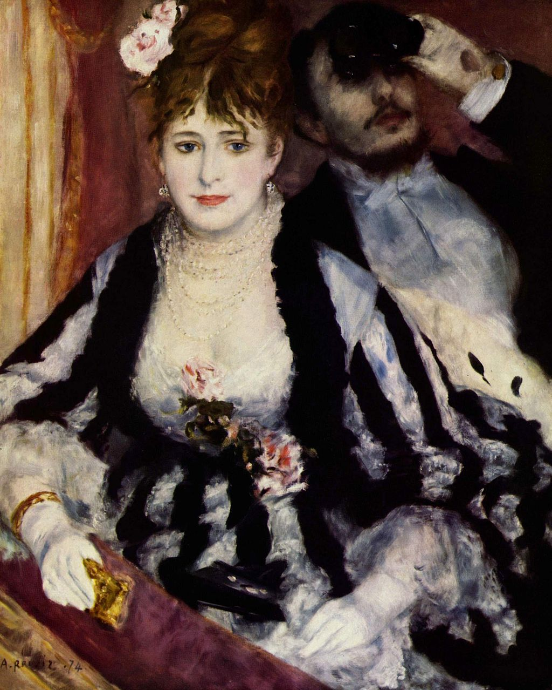

<head>
<meta charset="UTF-8" />
<meta name="keywords" content="drawing, painting" />
<meta name="description" content="drawings by Sunjy" />
<title>Sunjy</title>
<link rel="shortcut icon" type="image/x-icon" href="../../mImages/mCommon/favicon.ico" media="screen" />
<link rel="stylesheet" type="text/css" href="../../mCsses/mCommon/mCssA.css" />
<link rel="stylesheet" type="text/css" href="../../mCsses/mCommon/mCssB.css" />
<link rel="stylesheet" type="text/css" href="../../mCsses/mCommon/mCssC.css" />
<link rel="stylesheet" type="text/css" href="../../mCsses/mCommon/mCssD.css" />
<link rel="stylesheet" type="text/css" href="../../mCsses/mContent/mCssA.css" />
<link rel="stylesheet" type="text/css" href="../../mCsses/mContent/mCssB.css" />
<link rel="stylesheet" type="text/css" href="../../mCsses/mContent/mCssC.css" />
<link rel="stylesheet" type="text/css" href="../../mCsses/mContent/mCssD.css" />
</head>
<script type="text/javascript" src="../../mScripts/mContent/mContentAA.js" /></script>
<script type="text/javascript" src="../../mScripts/mContent/mContentAB.js" /></script>
<script type="text/javascript" src="../../mScripts/mContent/mContentAC.js" /></script>
<script type="text/javascript" src="../../mScripts/mContent/mContentAD.js" /></script>
<script type="text/javascript"></script> 
<script type="text/javascript">
document.write('<div class="mImgAbsolute"></div>');
/*
document.write('<p class="mFontSizeBColor" />From a white paper...</p>');
document.write('<table class="center"><tr><td>');
document.write('');
document.write('</td></tr></table>');
*/
</script>


<script type="text/javascript">
document.write('<p class="mFontSizeBColor" />The Theater Box</p>');
document.write('<p class="mFontSizeSColor" />“The Theater Box” by Pierre-Auguste Renoir, also knew by its French name “La Loge,” shows a couple in their theater box.<br><br>The theater in Paris at the time of this painting was a rapidly expanding form of entertainment and culture.<br><br>The theater was a prominent place to meet people and to be seen. Wealth and fashion were on parade. In this painting, Renoir focused upon the theater scene as a social stage where status and relationships were on public display.<br><br>Central to this painting is the blue eyes of the elegantly dressed woman. She has lowered her opera glasses, revealing herself to the audience.<br><br>The gentleman is hidden by his over-sized opera glasses, focusing his gaze elsewhere.<br><br>The models for this painting were Renoir’s brother Edmund and Nini Lopez, a model from Montmartre.<br><br>Edmund wears formal attire, which was typical of the gentlemen’s evening attire worn for the theaters. Nini models a fashionable ensemble that was worn for the opening night performances.<br><br>Renoir’s paintings are notable for their light and color, and the warm sensuality of Renoir’s style made his paintings some of the most famous works in the history of art.<br></p>');
document.write('<table class="center" /><tr><td>');
document.write('<br>The theater in Paris at the time of this painting was a rapidly expanding form of entertainment and culture.<br><br>The theater was a prominent place to meet people and to be seen. Wealth and fashion were on parade. In this painting, Renoir focused upon the theater scene as a social stage where status and relationships were on public display.<br><br>Central to this painting is the blue eyes of the elegantly dressed woman. She has lowered her opera glasses, revealing herself to the audience.<br><br>The gentleman is hidden by his over-sized opera glasses, focusing his gaze elsewhere.<br><br>The models for this painting were Renoir’s brother Edmund and Nini Lopez, a model from Montmartre.<br><br>Edmund wears formal attire, which was typical of the gentlemen’s evening attire worn for the theaters. Nini models a fashionable ensemble that was worn for the opening night performances.<br><br>Renoir’s paintings are notable for their light and color, and the warm sensuality of Renoir’s style made his paintings some of the most famous works in the history of art.<br>" />');
document.write('</td></tr></table>');
</script>


